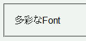
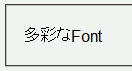

2003-06-21修正。例示を修正（「ＭＳ Ｐ明朝」を「'」で括った）。
font-familyプロパティでは複数のフォントを代替フォントとして指定できるが、Operaでは最初に有効なフォント以外は無視する。
<p style="font-family:xxxxx, Arial, 'ＭＳ Ｐ明朝', monospace;">多彩なFont</p>
多彩なFont
「xxxxx」という名前のフォントが存在しなければ、欧文に「Arial」、和文に「ＭＳ Ｐ明朝」が使用されているはずです（あるいは既定の等幅フォント）。
N6.1での表示
Opera6.04での表示
Opera6.04/7.0でも初めのフォントしか認識されません。